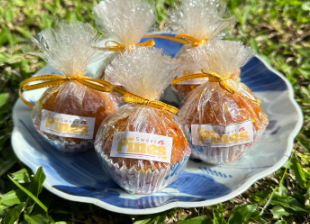

About Us
Sweet Pines is a small food business in Valencia City, Bukidnon, making snacks from ingredients grown in our own province.
Our Story
Our flagship products, Pinya Puffs, is made from sweet potatoes and pineapples sourced from local farmers. We started with friends, family and classmates and we are growing one happy customer at a time.
Our Mission
To provide a delicious, affordable and nutritious snacks while supporting local farmers and promoting sustainability.
🌱
Local Farmers
We buy from Bukidnon farms and went to partner with more of them
♻️
Less Waste
We are working toward eco-friendly packaging
🧡
Fair Price
Good Snacks should be easy to afford for students and families
Pinya Puffs
One Snack, two local ingredients and nothing complicated

₱10 per piece.
Ingredients
- Sweet Potatoes from Bukidnon
- Pineapples from Bukidnon
Delight in Every Bite!
Pinya Puffs are healthy, affordable snakcs made from Bukidnon sweet potatoes and pineapples. Only ₱10 per piece.